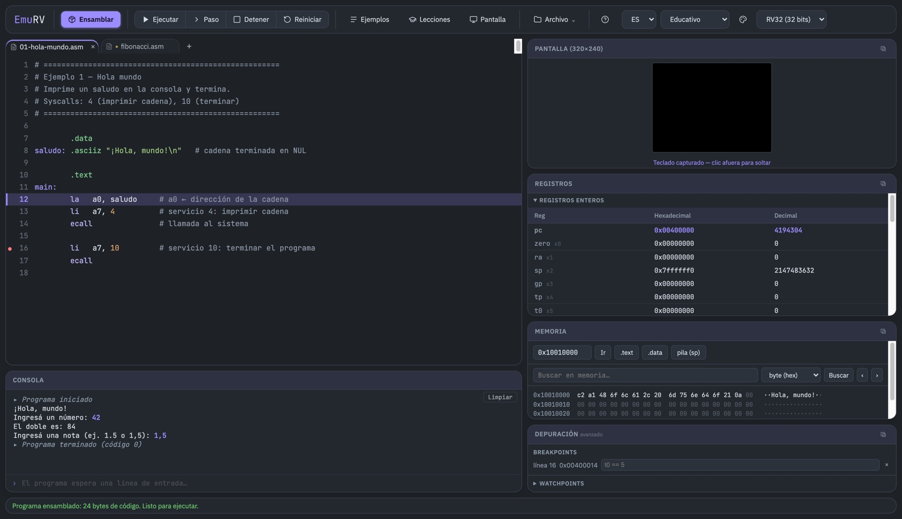
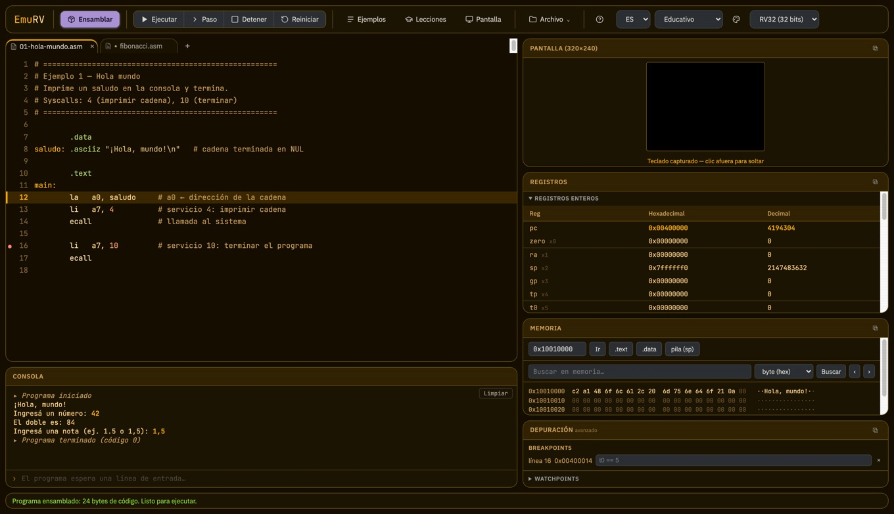
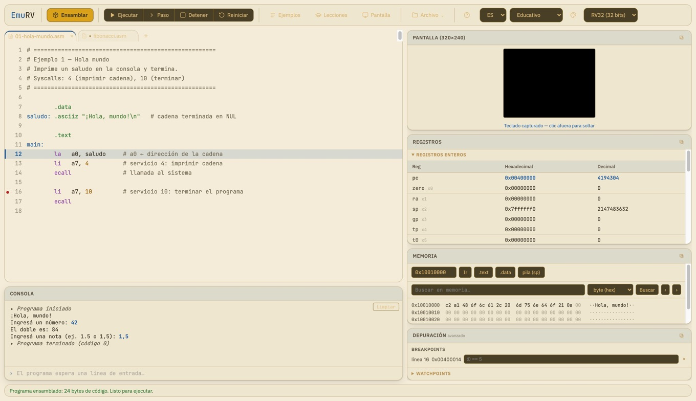
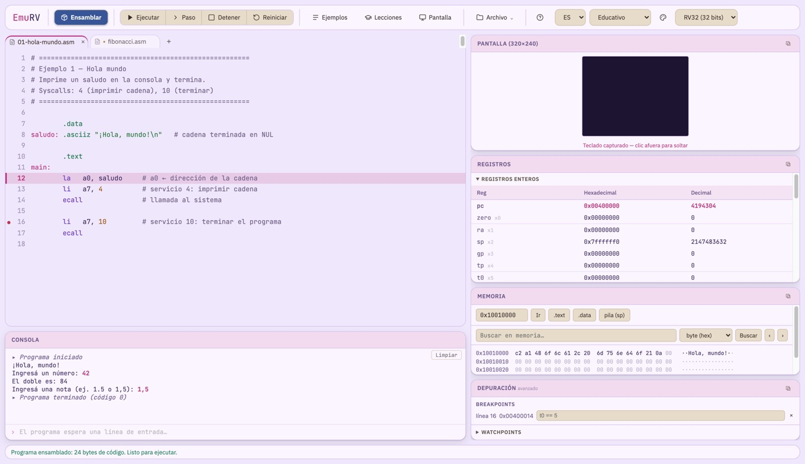
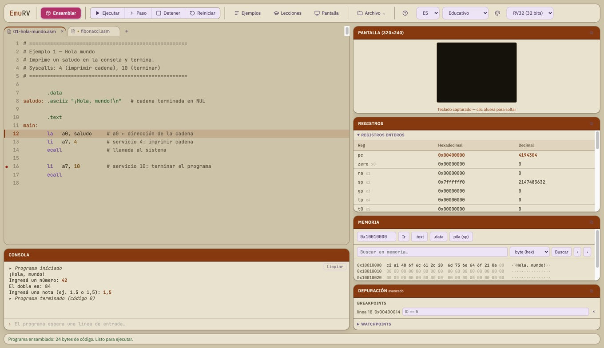
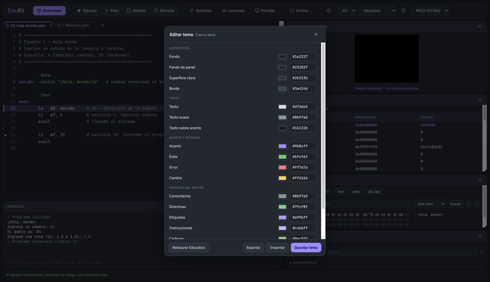
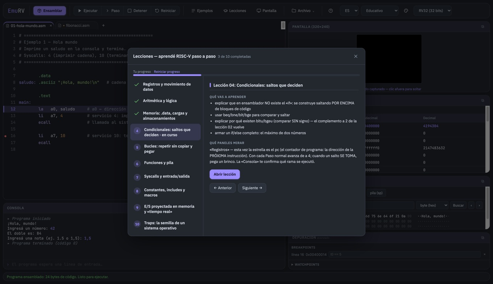
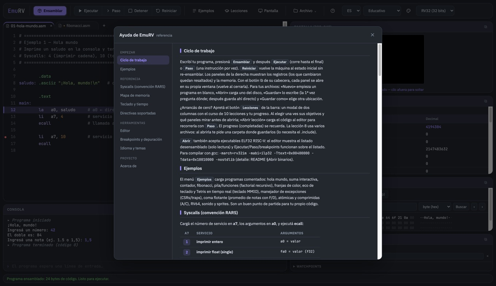
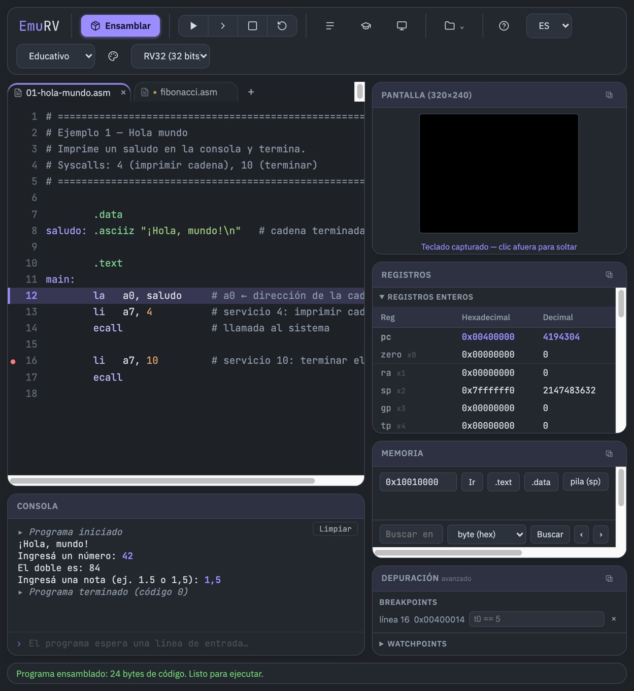
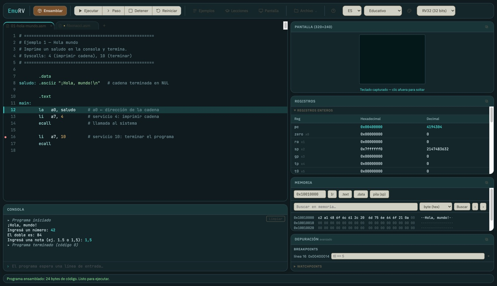

EmuRV is a desktop environment for learning RISC-V assembly: write, assemble, run or step, and watch the registers and memory change. It exists to replace emu8086 in a computer engineering degree, and its error messages are written in the student's own language. The interesting part isn't the interface — it's that a teaching tool was held to the correctness standard of a production emulator: the official RISC-V suites and the formal golden model of the specification.
Role · Whole system (undergraduate thesis)
Sole author: the Rust core, the assembler, the emulated devices, the CLI, the GDB stub, the frontend and the test suites. Built with AI assistance under one rule — every decision is recorded with its why, and nothing lands without me reviewing it. FIUNI, Computer Engineering.
Verified vs the official model
78/78official riscv-tests|72/72results identical to RISC-V’s official model|440automated tests|28–120×faster than RARS
EMURV.PRTSHEET 01/09 · WHY IT EXISTSGREENBAR · 132 COL
01The 8086 in the room
In the Microprocessors course you learn assembly on emu8086: a 16-bit Intel 8086 emulator, Windows-only, from the DOS era. It does the job — until you try to write something that reacts to a keypress while it runs. My own experience with that wall is where this thesis starts.
RISC-V is the obvious replacement: an open specification, current, and the one the industry is actually adopting. But the RISC-V tools built for teaching are aging or closed — RARS is Java, Ripes is Qt, CPUlator is a closed web app. None of them is a modern native desktop application with real-time I/O. That gap is the whole reason EmuRV exists.
What it does, in one lineEdit → assemble → run or step → watch registers and memory. Errors by line and column, in Spanish. A built-in 10-lesson course, 15 commented examples, and a graphics screen you can actually play a game on.
Read this page as backendAlmost nothing here is about the interface. What follows is an assembler I had to write from scratch, an execution loop that has to stay interruptible, a memory policy — and above all the only question that really matters for an emulator: how do you know it's correct?
Thesis prototype · v0.1.0
EMURV.PRTSHEET 02/09 · RUN IT HEREGREENBAR · 132 COL
02Try it right here
Below is a working EmuRV, running in your browser. It is not a video and not a mockup: press Ensamblar, then Paso, and watch the registers light up as they change. Click the editor's left margin to drop a breakpoint. Run «Suma interactiva» and type into the console when it asks, or open the «Sprites» tab to watch the 320×240 screen get drawn. Switch the theme, open the lessons, read the help.
Honest about what this is: a faithful in-browser reconstruction of the interface, with a JavaScript interpreter underneath that genuinely assembles and executes the three programs on the tabs — here the editor is read-only, and the rest of the catalogue is labelled «solo en la app». The desktop application runs on Unicorn Engine with the full RV32IMAFDC repertoire, your own programs, ELF import and export, a GDB stub and detachable windows. Everything on the sheets that follow describes the real one.
The demo needs a window at least 1000 px wide to fit the editor and the panels side by side. On a narrow screen it will say so — open it full screen, or come back from a laptop.
EMURV.PRTSHEET 03/09 · THE MACHINEGREENBAR · 132 COL
03What happens when you press Step
A Tauri 2 shell, a Rust core, and the CPU itself borrowed from Unicorn Engine — the emulation engine carved out of QEMU. The emulation lives in its own thread and never talks to the UI directly: the interface sends commands and receives events (paused, output, registers_update). Between the two sits the piece everything else depends on.
One step of execution, from the editor line to the emulated device.
The source_map, first
Assembling doesn't just produce bytes: it produces a bidirectional table between source line and address. Every 32-bit word emitted knows which line it came from — including the ones expanded out of a pseudo-instruction — and every line knows its first word. That table is what lets a click on the editor's margin become a real breakpoint, and what highlights the line that is about to execute. It had to be designed first, because everything else hangs off it.
AddressWordSource · hola-mundo.asm
0040000010010537lui a0, 0x10010 ← «la a0, saludo» expands into two
0040000400050513addi a0, a0, 0
0040000800400893addi a7, zero, 4 ← service 4: print string
0040000c00000073ecall
0040001000a00893addi a7, zero, 10 ← breakpoint on the editor line
0040001400000073ecall
Assembled: 24 bytes of code · ready to run.text base 0x00400000
The bug that shaped the execution loop
The first version called Unicorn once and let it run to the end, with a timeout to interrupt it. Then a student program of the form loop: j loop left the «Stop» button dead: Unicorn's timeout does not cut a tight loop with no syscalls in it. The instruction count does cut it, so execution was rewritten into bounded slices, checking for the stop signal between them.
A fixed slice of one million instructions cost speed. The current version makes the slice adaptive: it aims at roughly 40 ms of wall time per check, and drops back to the floor when the graphics screen is on, so frames keep their cadence. That single change moved the engine from 129–309 to 160–718 M instructions per second without losing any perceptible responsiveness. The register refresh was decoupled too — emitting one event per slice would have been about 500 events a second at the UI.
RegisterHexadecimalDecimalLast step
pc0x004000084194312
a0 x100x10010000268500992◀ changed
sp x20x7ffffff02147483632
a7 x170x000000000
zero x00x000000000
After two steps: «la a0, saludo» has landed. The changed register is highlighted — that flash is the whole didactic point.
EMURV.PRTSHEET 04/09 · THE ASSEMBLERGREENBAR · 132 COL
04The assembler I did not plan to write
The thesis brief closed the stack up front, and it said Keystone for assembly. Keystone's RISC-V support turned out not to be incomplete — it is nonexistent. I checked the 0.9.2 headers directly: the ks_arch enum has no KS_ARCH_RISCV entry at all, in any official release. That is a risk that fires on day one of a project, and the plan B was to write the assembler myself.
Which turned out to be the better outcome anyway, for two reasons the brief could not have anticipated: total control of the source_map, and diagnostics written for a beginner rather than for a toolchain. A third-party assembler would have handed me an English error with a byte offset.
stderr · emurv-cli asm hola.s
hola.s: línea 7, columna 9: instrucción desconocida: «sumar». EmuRV soporta RV32IM
(enteros y multiplicación/división de 32 bits) y Zicsr (csrr/csrw/…)
hola.s: línea 12, columna 14: «li» carga constantes numéricas; para direcciones
de etiquetas usá «la»
emurv-cli: el ensamblado falló con 2 error(es)
Real output, not an illustration. Every diagnostic carries line, column and — where the mistake has a common cause — the fix. In the app the same errors appear underlined in the editor.
How I know the encodings are right
An assembler that emits a wrong word produces a program that runs and gives the wrong answer — the worst possible failure for a teaching tool. So the encodings are not checked by hand: an oracle test suite assembles the same source with GNU as and compares the emitted words one by one. That oracle covers floating point (F and D), the atomics (A), the compressed 2-byte instructions (C) and the RV64IM repertoire against as -march=rv64im.
001Full repertoire, switchable widthRV32IMAFDC — integers, multiply/divide, single and double floating point with the f0–f31 file, atomics, and hand-written compressed instructions. A selector in the toolbar switches the machine to RV64: ld/sd, lwu, the «W» instructions and 6-bit shift amounts. RV32 stays untouched, and a 64-bit instruction inside an RV32 program produces a teaching error rather than a wrong result.
002Directives a real project needs.include resolved relative to the including file, .macro with named parameters, .eqv/.equ constants, and %hi()/%lo() so a student can see what la actually expands to. Multi-file programs work in the app and from the CLI.
003Standard ELF32, in and outExport produces a real ELF32 RISC-V that other tools load — Ripes, objdump. Import is the other direction: open a binary and the editor switches to read-only disassembly mode, with run, step and breakpoints working on the listing. A C program compiled with riscv64-elf-gcc loads too; an ELF with the wrong base address is rejected with a message that names the exact flag that is missing.
004A relocatable variant, because someone will askasm --reubicable emits symbol references PC-relative (auipc) instead of absolute and marks the ELF ET_DYN, for a loader that places it somewhere else. The default stays absolute: that is the one that matches EmuRV's memory map when you inspect it elsewhere.
Verified against GNU as
EMURV.PRTSHEET 05/09 · DEVICES & REAL TIMEGREENBAR · 132 COL
05Devices, and the game that justifies them
The whole memory map is compatible with RARS — the same base addresses, the same keyboard semantics. That is not nostalgia: it means the Spanish-language teaching material that already exists for RARS runs on EmuRV unchanged.
AddressRegionNotes
0x0040_0000.textCode. Mapped R+X — not writable, on purpose.
0x1001_0000.dataData. Not executable.
0x1004_0000heapGrows upward from sbrk (syscall 9). No free.
0x7FFF_FFF0stack (sp)Initial stack pointer, 8 MB mapped below it.
0x9000_0000framebuffer320×240, one byte per pixel — VGA mode 13h.
0x9002_0000palette256 RGB888 colours; the program can rewrite them.
0x9003_0000vsyncWriting 1 means «frame ready».
0xFFFF_0000keyboard · controlBit 0 set means a key is waiting. Same address as RARS/MARS.
0xFFFF_0004keyboard · dataThe oldest key code — reading it consumes the key. Queue of 64.
Polling, and why it isn't a shortcut
All the I/O is polling, and that is a documented structural limitation, not a simplification: Unicorn's own FAQ states that it does not expose hardware interrupts. Building a CLINT and a PLIC on top of a CPU-only engine that officially does not support them is real architecture work, and it is written down as future work rather than quietly implied. What does exist is a keyboard the program can poll without ever blocking, plus syscalls 30 (system time in ms) and 32 (sleep, interruptible by «Stop»).
The .text region being read-only is a deliberate teaching policy — W^X. Jumping into data or patching your own code stops with a message that explains what happened rather than corrupting silently. Keep that decision in mind: it comes back with a cost on the next sheet.
Tetris as an acceptance test
The example that closes the lesson series is a port to RV32IM of an 8086 Tetris from the same Microprocessors course — the exact program that was painful on emu8086. Board in memory, bitmaps, collisions, line clears, scoring, drawn as coloured blocks on the 320×240 screen and played with the keyboard. Its game logic and the resulting pixels are checked by a test oracle, not by me looking at it.
Full-repaint frame rate (Rust side)811 FPS
What the UI actually consumes~30 Hz
Headroom over what the screen needs~27×
Hardware interrupts (CLINT / PLIC)[FUTURE]
Worst case, on purposeThat 811 is the median of five runs (range 799–838), measured on the production path: a complete repaint of the framebuffer every frame plus the frame-close syscall. Nothing is skipped to make the number look better.
EMURV.PRTSHEET 06/09 · HOW I KNOW IT'S CORRECTGREENBAR · 132 COL
06Two verdicts I did not write myself
My own tests can only tell me the emulator agrees with what I believed when I wrote it. So the correctness argument rests on two suites that come from outside the project: the official riscv-tests, and riscv-arch-test through RISCOF, which compares my machine's output against Sail — the formal golden model of RISC-V International. Every number below is reproducible from a script in the repository.
Verdict A · riscv-tests, official self-checking suites · commit 34e6b6d1 · 2026-07-22
Suite · -marchTestsPassExcludedResult
rv32ui · rv32i_zicsr_zifencei42411[ PASS ]
rv32um · rv32im_zicsr88—[ PASS ]
rv32ua · rv32ia_zicsr1010—[ PASS ]
rv32uc · rv32ic_zicsr101[ EXCL ]
rv32uf · rv32if_zicsr11101[ PASS ]
rv32ud · rv32ifd_zicsr1091[ PASS ]
Total — 78/78 of the executable tests827840 FAIL
Verdict B · RISCOF 1.25.3 vs Sail 0.13 · signature compared word for word · 2026-07-22
Suite rv32i_m/TestsMatchMismatchResult
I — base integer3838—[ MATCH ]
M — multiply / divide88—[ MATCH ]
C — compressed27261[ 1 BY DESIGN ]
Zifencei101[ 1 BY DESIGN ]
Total — 72/72 of the compatible tests, identical signature74722100 %
The four exclusions and the two mismatches, named
A result with an asterisk is worth nothing if the asterisk is not spelled out, so here they are, each traced to root cause rather than waved away.
fence_i · rvc · Fencei — my W^X policyThese tests write instructions into .text and jump into data — self-modifying code is precisely what they are testing. The official environment links everything into one RWX segment. EmuRV maps .text read-only by the teaching decision on the previous sheet, and stops with «the program tried to write to an address that doesn't belong to .data». Incompatible by design; the compressed decoding itself is covered by my own oracle against GNU as.
cebreak-01 — ebreak belongs to the debuggerThe test expects c.ebreak to be delegated to the guest's trap handler. In EmuRV ebreakis the software breakpoint mechanism of the UI, so it never reaches the guest. Same shape of conflict: a deliberate decision, not a semantics defect.
fmin — a defect in the engine underneathThis one is not mine and it is the finding I am most pleased with. An isolated probe against the machine showed fmax.s(1.0, sNaN) returning a canonical qNaN instead of 1.0. That is the IEEE 754-2008 semantics, superseded by the RISC-V F v2.2 spec: QEMU fixed it in 6.0, but Unicorn 2.x is still based on QEMU 5.0.1. Subtest 20 of fmin.S detects exactly that case. Documented as an inherited limitation — with the version chain that explains it.
And underneath, the ordinary discipline
Rust core, against the real machine271
CLI50
Interface119
Total, zero failures · clippy with no warnings440
CI jobs green (macOS build + bundle weight gate)4/4
Counting them properlyThat total used to be reported as «271 + 10 + 119». The 10 was wrong: it counted a single test binary and silently dropped three others. I found it doing a documentation reconciliation pass, re-ran the whole suite and corrected every document that carried the figure. A number nobody had questioned was wrong for weeks — which is exactly why the reconciliation pass exists.
78/78 · 72/72 · 0 fail
EMURV.PRTSHEET 07/09 · PERFORMANCEGREENBAR · 132 COL
07Measured against the reference, not against itself
Four RV32IM kernels, the same algorithm on four emulators, ~500 M instructions per run, median of five, and equivalence verified first — all four produce the same numeric result per kernel. Comparing an emulator only against its own previous version proves nothing.
Each bar spans the slowest and fastest of the four kernels for that emulator. A logarithmic axis is the only honest way to hold 5.6 and 4 806 in the same picture — the exact numbers are in the table below.
Kernel · RV32IMEmuRVQEMUSpikeRARS
arithmetic — pure ALU718,43 289,5881,86,0
memory — lw/sw over 4 KiB257,14 342,1992,05,6
calls — call/ret + stack299,41 090,5982,15,8
mixed — LCG + memory + mul160,24 805,8992,05,7
Millions of instructions per second, median of 5. EmuRV 0.1.0 (Unicorn 2.1.5) · QEMU 11.0.2 · Spike 1.1.1-dev · RARS 1.6 on OpenJDK 25, with its 0.133 s JVM startup discounted.
Reading it honestly
Against RARS — its actual category, the same didactic job — EmuRV is 28 to 120× faster. Against Spike, the reference instruction-set simulator of the ecosystem, it lands in the same order of magnitude: 81 % of Spike on pure ALU. Against plain QEMU it is 0.7 to 1.5 orders behind.
That remaining gap is bought, not lost: an interruptibility check every ~40 ms, the observation hooks that make the keyboard, the screen and the syscalls visible, and a wall time that includes process start and assembling the source. The engine's own ceiling with no slicing, on the same machine, was 1 293 M instr/s when it was last remeasured. The requirement in the spec was 10 — it clears it by 16 to 72× in the worst kernel, and the author's decision was to stop chasing speed there.
Three numbers for one metricMy own documentation carried three different frame rates for the same benchmark — 835, 797 and 832 — and I spent a while looking for the regression between them. There wasn't one. All three were single runs of a bench with ±2.5 % spread. Five control runs gave 799, 804, 811, 814, 838: the three historical figures all sit inside the normal band. The fix wasn't to the code, it was to the method — every figure now ships with its median, its range and its n.
Limitations I am declaring before you find them
001Nominal instruction countDeterministic loops counted over the listing, not retired by a hardware counter. The same criterion is applied to all four emulators, so the ratios hold even if an absolute is off.
002Synthetic microkernels, not CoreMarkThe bare-metal CoreMark port per target was deferred by an explicit effort gate. It does not change the order-of-magnitude conclusion, and the harness is ready for it.
003One machine, and QEMU in system modeEverything ran on a single Apple M4 Pro, so the ratios between emulators are the citable part, not the absolutes. QEMU had to run in system mode because macOS Homebrew ships no user-mode build; Spike and QEMU execute bare-metal ELF while EmuRV and RARS execute the same assembly source.
004emu8086 is a documentary comparisonThe emulator EmuRV replaces is a step-by-step interpreter that redraws its UI per instruction, publishes no performance figures, and needs a Windows machine to run. I am not going to invent a number for it.
EMURV.PRTSHEET 08/09 · THE INTERFACEGREENBAR · 132 COL
08The part the student actually touches
Everything themeable lives in CSS design tokens, so a theme is one block of variable overrides and no duplicated CSS. Five themes ship with the app plus one the user builds, and the contrast of all five is verified by an automated test — body text and editor syntax both, against WCAG AA. A theme that fails the test does not ship.
EmuRV — tema Educativo (default)

Main view.Editor on the left, machine on the right. Registers are always visible and come first; Memory folds; Debug starts collapsed and reveals itself the moment you set your first breakpoint. Each of those panels can be torn off into its own OS window with the ⧉ button, and stays synchronised with the running program.
Tema Retro-CRT

Retro-CRT.Amber phosphor and scanlines. The editor's syntax colours follow the theme tokens too — CodeMirror reads the same variables.
Tema Pergamino

Pergamino.The light theme, for a projector in a lit classroom — the case where a dark IDE stops being readable from the back row.
Tema Retro Kawaii

Retro Kawaii.Pastel vaporwave. It passes the same AA test as the rest — that constraint is what kept the pastels from going unreadable.
Tema Disquete 90s

Disquete 90s.Nineties desktop beige, coloured title bars. Same tokens, a different decade.
Modal · Editar tema

Build your own.One colour control per token — surfaces, text, accent, states and editor syntax — with live preview, export/import as JSON, and a contrast warning that informs without blocking: it is your theme.
Modal · Lecciones

Ten lessons.Registers → arithmetic → memory (endianness in front of you) → conditionals → loops → functions and the stack → syscalls → multi-file → MMIO and real time → traps, your first mini-kernel. Opening one loads its code into the editor. All ten also run from the terminal, and the CI keeps watch on them.
Modal · Ayuda

The reference, inside the app.Syscalls, memory map, MMIO keyboard, directives, debugging — with a scroll-spy index, so nobody has to leave the tool to look up an a7 value.
Ventana angosta

Any window width.The toolbar buttons drop to icon-only and the controls rewrap instead of being cut off — a laptop in a classroom is not a 27-inch display.
Tema personalizado

A user's theme.Unlike the built-ins, its values never enter tokens.css: they are CSS variables applied live on :root and saved on the machine.
One language decision, stated rather than hidden
The interface has an ES/EN selector. The assembler and runtime diagnostics, and the lesson content, stay in Spanish even in English mode. That is a declared scope decision — the Spanish material is the didactic contribution of the thesis, and translating it would have meant maintaining two versions of the thing being evaluated. It is written down as a decision, not left as an oversight for someone to discover.
EMURV.PRTSHEET 09/09 · STACK & HONEST STATUSGREENBAR · 132 COL
09Inventory, and what is still missing
Core
Rust · Tauri 2
Unicorn Engine 2.1.5
Own RV32IMAFDC / RV64IM assembler
Own disassembler
ELF32 export and import (crate object)
Emulation on a dedicated thread
Devices
Framebuffer VGA 13h · 320×240
MMIO keyboard, RARS-compatible
Tone generator (off by default)
Syscalls in the RARS convention
Zicsr · user trap handler
Interface
TypeScript · Vite
CodeMirror 6 (own RISC-V mode)
CSS design tokens · 5 themes + user theme
IBM Plex Sans · JetBrains Mono (self-hosted, OFL)
Detachable panel windows
ES / EN with persistence
Tooling
emurv-cli — headless assemble / run / disasm / debug
GDB remote stub (gdbserver protocol)
Semantic exit codes, for automatic grading
GitHub Actions · 4 jobs · bundle weight gate
Verification
440 automated tests, zero failures
Encoding oracle against GNU as
riscv-tests · 78/78 executable
RISCOF vs Sail · 72/72 signatures
Automated WCAG AA contrast test
Reproducible benchmark (script + CSV)
Written record
32 roadmap points, each with its plan
Engineering log with the decisions and their why
Documentary reconciliation against evidence
Where it really stands
The thesis is in progress. Separating what is verified from what is merely built is the whole point of the exercise.
[x] Built and verified
· RV32IMAFDC + switchable RV64IM
· Official compliance, twice over
· Screen, keyboard, sound, sprites, traps
· CLI, GDB stub, CI in green
· Benchmark against QEMU, Spike and RARS
· 10 lessons and 15 examples, watched by tests
[~] Built, not verified
· Windows: the NSIS installer cross-compiles and runs in CI, but it has never been opened on a real Windows machine — so I do not claim it works
· Linux: the code is portable and the build leg exists, marked experimental; not validated
· macOS on Apple Silicon is the only platform I have actually tested
[ ] Missing, and named
· The usability study with students — protocol and questionnaires ready; it needs the supervisor's sign-off and participants. It is what the committee actually grades
· Hardware interrupts: CLINT and PLIC over an engine that does not expose them
· CoreMark, code signing and notarisation, versioned releases